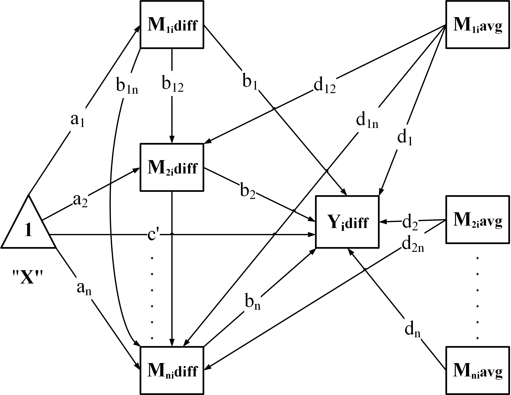

Introduction
The
GenerateModelCN function dynamically generates a
Structural Equation Model (SEM) formula to analyze chained or nested
mediation for ‘lavaan’ based on the prepared dataset. This document
explains the mathematical principles and the structure of the generated
model.

1. Difference Model Description
1.1 Regression for
and
For
mediators
,
the difference model is defined as:
Outcome Difference Model
():
Mediator Difference Model
():
Where: -
:
Intercept term for the outcome difference model. -
:
Average effect of mediator
on
.
-
:
Moderator effect for
in
.
-
and
:
Regression coefficients for
and
on
,
respectively. -
:
Residual for
.
2. Indirect Effects
For each mediator
,
the indirect effect is defined as:
For chained mediators, the indirect effects follow the paths through
the mediators: 1. For a single mediator
:
- For a chained pathway
:
The total indirect effect is:
2.1 Examples of Indirect Effects
For three mediators
,
the indirect effects include:
- The direct path through
:
- The chained path through
:
- The chained path through
:
- The chained path through
:
3. Total Effect
The total effect combines the direct effect and the total indirect
effect:
Where
is the direct effect.
4. Comparison of Indirect Effects
When there are multiple mediators or pathways, comparing their
indirect effects provides insights into the relative influence of each
mediator or chain.
4.1 Comparing Indirect Effects
The contrast between two indirect effects,
and
,
is calculated as:
Interpretation:
-
:
Pathway
has a stronger indirect effect.
-
:
Pathway
has a stronger indirect effect.
Indirect Effects
For three mediators, the following indirect effects are defined:
Direct Path Effects:
Chained Path Effects:
Comparisons
The indirect effects are compared as follows:
—
5. C1 and C2 Coefficients
For C1- and C2-measurement conditions, the coefficients are
calculated as follows:
C2-Measurement Coefficient
():
C1-Measurement Coefficient
():
For chained pathways: 1. C2-Measurement Coefficient
():
-
C1-Measurement Coefficient
():
— For three mediators
,
the coefficients are calculated as follows:
C2-Measurement Coefficient:
C1-Measurement Coefficient:
C2-Measurement Coefficient:
C1-Measurement Coefficient:
C2-Measurement Coefficient:
C1-Measurement Coefficient:
C2-Measurement Coefficient:
C1-Measurement Coefficient:
—
6. Summary of Regression Equations
This section summarizes all the regression equations:
Outcome Difference Model
():
Mediator Difference Model
():
Indirect Effects:
Comparison of Indirect Effects
C1- and C2-Measurement Coefficients:
By combining these equations, the GenerateModelCN
function supports chained mediation analysis with flexibility in
handling nested pathways.